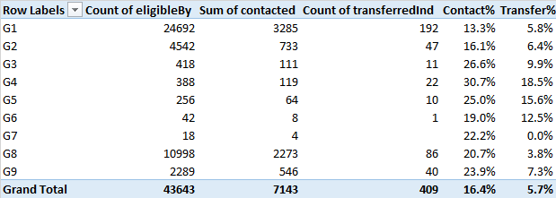
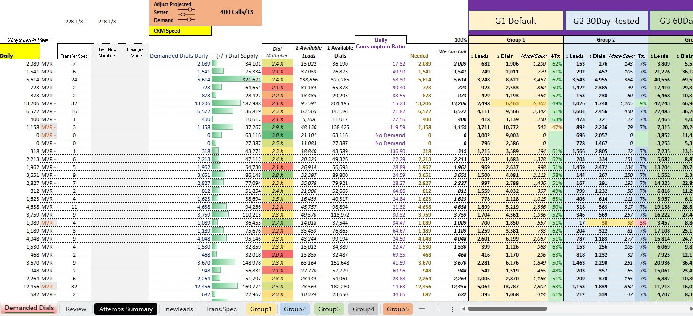
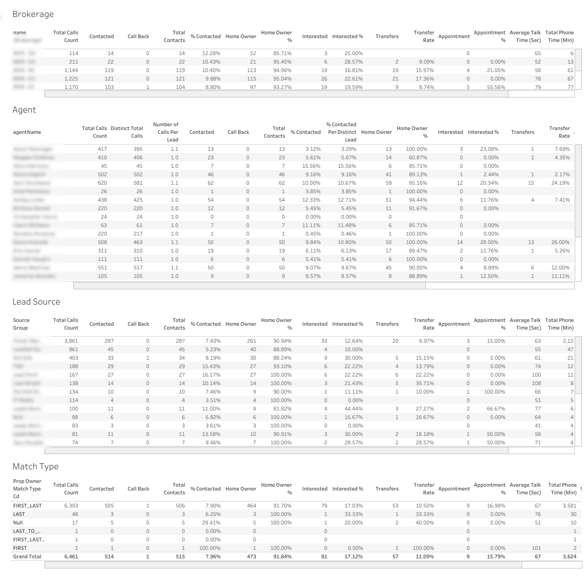

Residential PropTech · Operational Systems & Data
Designing and governing the lead segmentation infrastructure powering a 230+ agent outbound operation across 33 states - with nightly queue management, real-time compliance enforcement, and data-driven group allocation targeting an 18–20% contact rate.
The Business Context
The existing marketing channels and follow-up cadence had proven that the product could sell, but there was still observable waste in the system. Agents were not always following up consistently, and despite attempts to require that behavior in the sales platform, there was still room for improvement.
Senior leadership firmly believed that adding an outbound dialing component could recover value from leads that the inbound process had left behind. The task became to explore this potential opportunity. It turned out that the answer changed the shape of the entire operation.
From Test to Infrastructure
I was asked to research outbound dialer options for what was scoped as a small pilot with a handful of agents. I selected a cloud-based third-party outbound dialing platform with basic API access and month-to-month terms that I felt was appropriate for a test.
The pilot produced positive results. Agents were generating contracts from leads that had been written off. Leadership moved immediately to scale the program, first to the existing sales agent team, then to a dedicated team of Transfer Specialists whose sole purpose was to get homeowners on the phone, perform basic eligibility qualifications, and transfer them to licensed sales agents. That team scaled faster than anyone anticipated. By peak operation we had over 230 transfer specialists dialing simultaneously, each running upwards of 400 dials per day across dozens of state brokerages.
My Role
I owned the segmentation logic and group criteria that determined which leads entered the dialing queues and in what priority order. I managed the relationship with our third-party data vendor, oversaw the dialer platform integration in close collaboration with our CTO and senior engineer, and was accountable for overall program performance.
I developed the demand planning methodology that became the foundation for an operational planning workbook my analyst built and operationalized. I initially managed daily transfer specialist assignments across state brokerages before delegating the day-to-day planning to my analyst. The segmentation queries were developed collaboratively with our data engineering team. I defined the business logic, actively maintained and patched these queries, and executed them daily as part of operational management.
The Segmentation Architecture
State brokerage organization. Real estate transactions require state licensing. Our operation was organized by state brokerage where licensed agents were assigned to specific states, and transfer specialists were mapped to state assignments to ensure transfers routed to the correct licensed agent pool. Managing lead supply against transfer specialist demand across dozens of states simultaneously was the central operational challenge.
The segmentation groups. The segmentation groups. The lead database was segmented into ten groups, each representing a distinct contact population with different eligibility criteria, expected contact rates, and conversion potential. Examples included new leads (highest contact rates, limited volume), 30-day rested (no contact attempt in prior 30 days), previously interested (expressed interest but didn't convert - high-value, limited volume), unsigned appointments, and previous transfers. Each group had defined SQL-driven eligibility criteria determining when it could be dialed, how recently it needed to have rested, and what priority tier it occupied in the queue.
The clientInterestLevel scoring system. Within groups, leads were further prioritized by a scored interest signal built directly into the segmentation queries. A 0–3 scoring scale evaluated each contact based on prior behavioral signals — Score 3 for a prior offer on record, Score 2 for previously interested or transferred, Score 1 for prior dialer contact, Score 0 for no prior engagement. Queues were ordered by score descending, ensuring transfer specialists were always working highest-signal contacts first within a given group.
Compliance enforcement. Compliance enforcement. Compliance logic was enforced through a combination of query-level controls and operational protocols. The segmentation queries enforced cross-system DNC flag suppression from both internal and national DNC registries, active contract exclusion to prevent dialing existing clients, and a 90-day lead purchase expiration. Timezone compliance was managed operationally such that transfer specialists were only permitted to place dials during valid calling windows for their assigned state.
The nightly requeue process. The dialing platform's data architecture required leads to be organized into agent-dedicated lead streams. This led to a nightly operational cycle: purge all leads from agent queues, execute the group qualification SQL against the current database state, and refill each agent's queue for the following day's dialing. This process also enforced the group proportion logic. The nightly refill balanced high-contact-rate low-volume groups against high-volume lower-contact-rate groups across dozens of state assignments. At peak volume this felt less like a process and more like a puzzle.
Group Segmentation Query (Sanitized)
-- Outbound Contact Segmentation Query
-- Identifies eligible contacts, scores by interest level,
-- enforces compliance rules
SELECT
t1.brokerageId,
ls.leadSourceCd,
la.clientId,
l.phoneE164,
sp.state,
sp.zipCd AS zip,
-- DNC compliance: suppress if on internal or national DNC list
(
SELECT COALESCE(MAX(1), 0)
FROM ContactPhone cp
WHERE cp.phoneNumberE164 = l.phoneE164
AND (cp.doNotCallInd = 1 OR cp.nationalDncInd = 1)
) AS doNotCallInd,
-- Suppress if active contract exists on this phone number
(
SELECT COALESCE(MAX(1), 0)
FROM ContactPhone cp1
JOIN Contract c ON ...
JOIN ContractStatus cs ON ...
WHERE cp1.phoneNumberE164 = l.phoneE164
AND cs.contractStatusCd IN ('ACTIVE', 'CLOSED', 'TERMINATED')
) activeContractInd,
-- Interest level scoring: 0-3 scale driving queue priority
CASE
WHEN t1.hasOfferInd = 1 THEN 3 -- Prior offer exists
WHEN t1.previouslyInterestedInd > 1
OR t1.transferredInd = 1 THEN 2 -- Previously interested
WHEN t1.lastDialerContact IS NOT NULL
THEN 1 -- Prior dialer contact
ELSE 0 -- No prior engagement
END clientInterestLevel
FROM (
-- Core eligibility subquery
SELECT sp.contactProcessId, sp.brokerageId, ...
FROM Brokerage b
JOIN ContactProcess sp ON b.brokerageId = sp.brokerageId
WHERE b.brokerageId IN (:brokerageIds)
AND sp.propertyClassCd = 'SINGLE_FAMILY'
HAVING
-- 30-day rest interval enforcement
(lastDialerContact < NOW() - INTERVAL 30 DAY
OR lastDialerContact IS NULL)
AND hasTransferLeadInd = 0
) t1
WHERE (l.propertyEstPriceUsd <= 900000 OR l.propertyEstPriceUsd IS NULL)
HAVING
doNotCallInd = 0 -- TCPA: exclude DNC numbers
AND activeContractInd = 0 -- Exclude existing clients
AND clientInterestLevel > 0 -- Require prior engagement signal
AND assignedInd IS NULL -- Exclude already-queued contacts
ORDER BY clientInterestLevel DESC -- Highest interest score first
LIMIT :limitSegmentation logic defined by me and implemented in collaboration with our data engineering team. I owned the business rules, eligibility criteria, and priority scoring framework — and actively maintained, patched, and executed these queries daily as part of operational management.
Group Performance Analysis — Contact & Transfer Rates by Segment

Group-level performance data validating the segmentation hypothesis. G4 and G5 (previously interested, high-signal groups) achieved 30.7% and 25.0% contact rates versus G1 (new leads) at 13.3% on 24,692 eligible contacts. The overall contact rate of 16.4% is close to the 18% target. The contrast between high-contact-rate low-volume groups and high-volume lower-contact-rate groups is the tension the nightly group proportion management was designed to balance.
The Demand Planning Methodology
To manage daily transfer specialist assignments against lead supply, I developed a demand planning methodology that projected setter demand against available dial supply by brokerage and group. The framework showed demanded daily dials, total available leads and dials, a consumption ratio indicating how efficiently supply was being utilized, and group-level breakdowns across all segments. My analyst operationalized this methodology into a workbook and eventually ported it into Tableau. This became a daily management instrument utilized by our team and executed by the operations manager.
Operational Demand Planning Workbook (July 2022)

Daily operational planning tool built on my demand planning methodology by my direct report analyst. Shows demanded dials, available lead and dial supply by brokerage, dial multiplier, consumption ratio, and group-level breakdowns — the instrument used to manage 228 transfer specialists across dozens of state brokerages. This snapshot is from July 2022 at near-peak scale.
Transfer Specialist Activity Dashboard

Performance reporting framework covering brokerage-level summary, agent-level activity, lead source breakdown, property owner match type, lead age cohort performance, call outcomes, and offer status. Built to give operations managers real-time visibility into program performance and enable rapid identification of underperforming segments or agents.
The Outcome
The program grew from a small pilot to the primary new business generation engine for the operation, eventually supporting over 230 simultaneous transfer specialists at peak, running tens of thousands of dials per day across 33 states. Group-level performance data and our demand planning methodology enabled us to operate at a very large scale while maintaining productive output.
What I'd Do Differently
The dialer vendor selection at the outset of this program became the single most consequential technical constraint we lived with for years. I selected the platform because it was appropriate for a small pilot with month-to-month terms, basic API, and low commitment. When leadership immediately decided to scale, we were operationally locked into a system that wasn't designed for what we were asking of it. The nightly purge and requeue cycle required a significant engineering investment, and it existed entirely because of the platform's data architecture limitations.
The primary lesson I learned from this experience is to evaluate vendors against the scale you might need, not the scale you currently have. A pilot that works is likely to become permanent infrastructure. The cost of switching later almost always exceeds the cost of selecting the right tool at the outset.
Let's Talk
I'm currently exploring Senior Product Manager opportunities in platform, data systems, and operational automation — remote, nationwide.
Connect on LinkedIn →